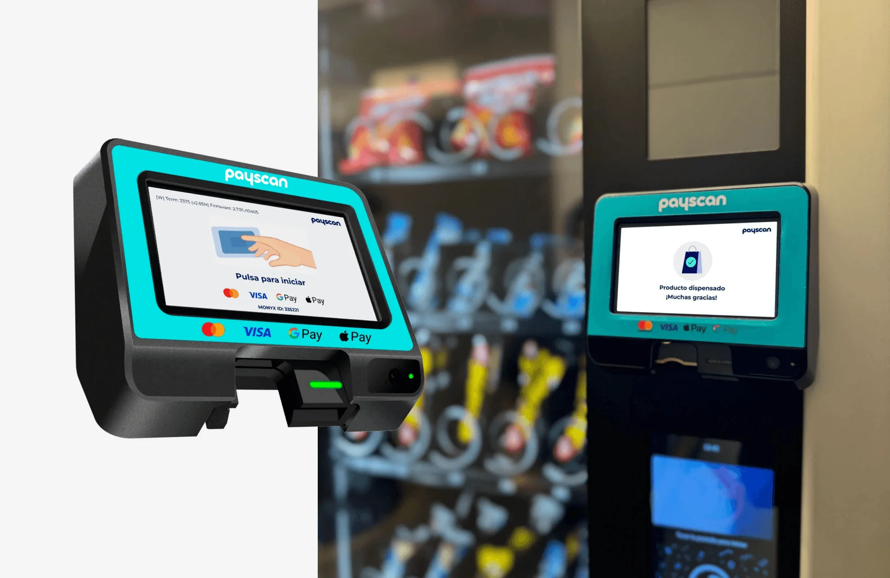
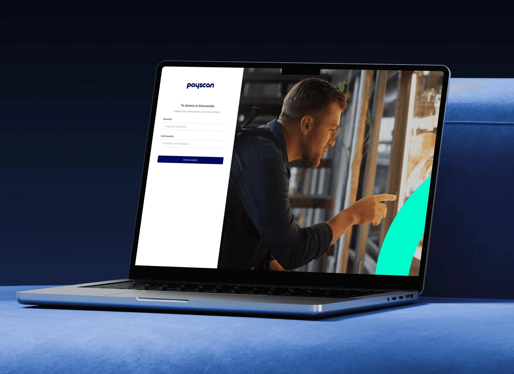
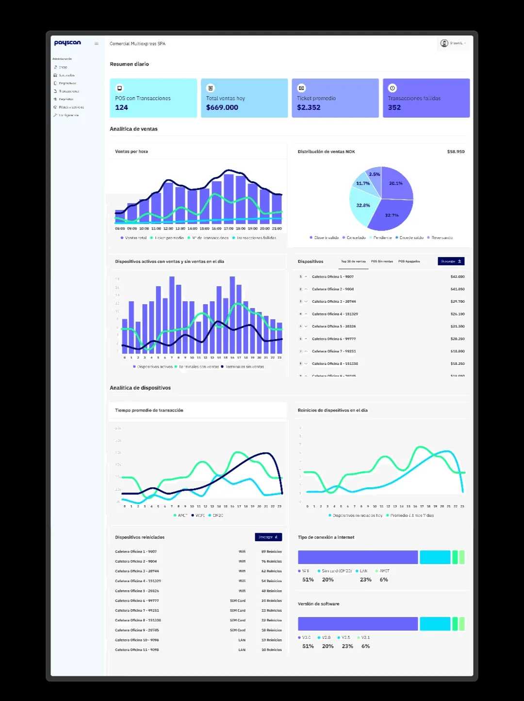
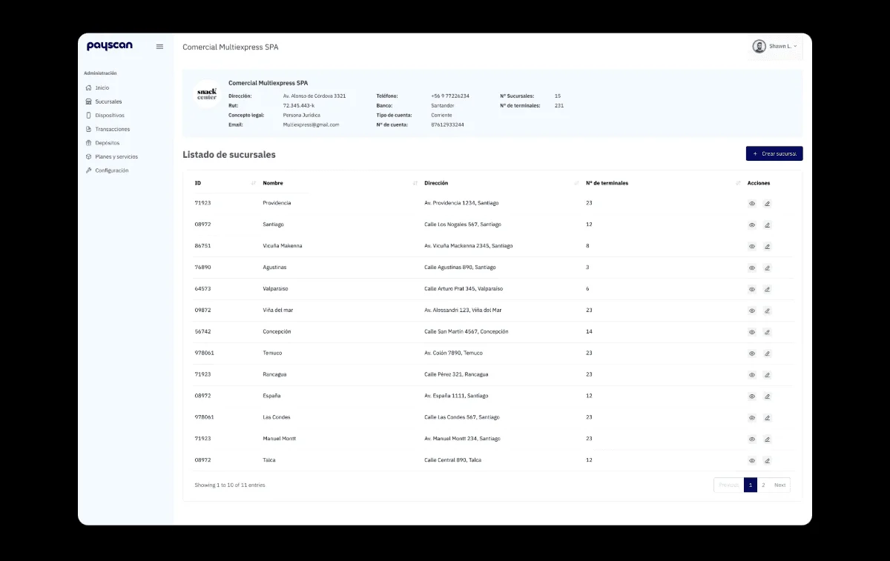
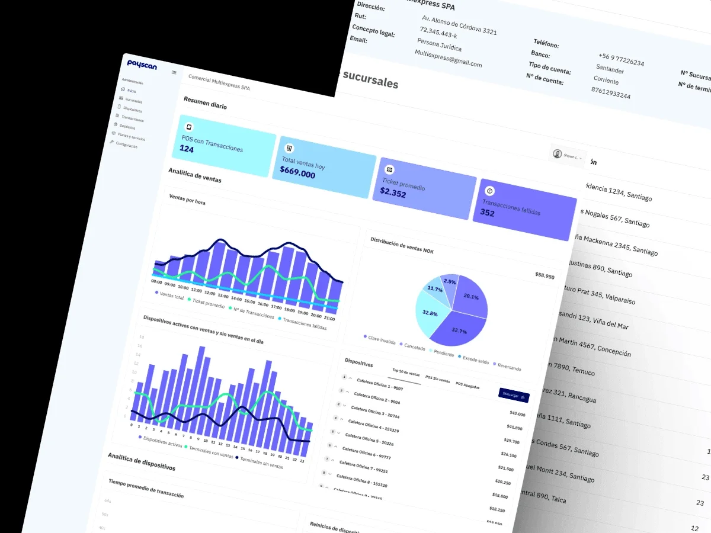

Payscan
Payscan es una empresa de soluciones de pago. Su producto es un POS que se conecta a máquinas de todo tipo: expendedoras de snacks y bebidas, de café, monoproductos, de masajes y parquímetros. El encargo fue diseñar el sistema completo: el dispositivo que usa quien paga y el backoffice con el que los comercios administran su red.

El problema
Un mismo dispositivo tiene que funcionar igual pegado a una máquina de café en una oficina que a un parquímetro en la calle. Lo que cambia no es el pago, es todo lo demás: quien paga está de pie, con prisa, a veces a la intemperie y sin nadie a quien preguntar.
La aplicación que existía ponía demasiadas opciones en cada pantalla. En un producto que se usa treinta segundos y de pie, cada opción de más es una decisión que alguien tiene que tomar delante de una máquina, y una duda ahí es una venta que no ocurre.
Había una segunda mitad menos visible. Payscan no vende un dispositivo, vende una red: comercios con varias sucursales, y cada sucursal con varios POS. Sin una forma de administrar eso, cada alta y cada consulta pasa por Payscan, y el negocio deja de poder crecer sin crecer también en gente.
Qué hice
- Diseño de producto
- Diseño de interacción
- Arquitectura de información
- Roles y permisos
- Diseño de interfaz
Herramientas
- Figma
- Maze
- Photoshop
- Jitter

Qué hice
En el POS todas las decisiones fueron en la misma dirección: quitar. Reduje las opciones por pantalla a las que de verdad hacen falta, subí el tamaño de la tipografía para que se lea de pie y a un brazo de distancia, reescribí los mensajes en lenguaje llano y dejé una salida evidente en cada flujo. Nadie debería quedarse atrapado en una pantalla de pago sin saber cómo volver.
Como el mismo dispositivo se conecta a máquinas muy distintas, diseñé el flujo de pago para que no dependa del tipo de máquina. Quien ya pagó un café sabe pagar un parquímetro. Esa consistencia no es una preferencia estética: es lo que hace que el aprendizaje de un usuario sirva en toda la red.
El backoffice lo ordené sobre la jerarquía real del negocio, comercio, sucursal y dispositivo. Un comercio grande puede tener decenas de sucursales y cada una varios POS, así que cada nivel muestra su propio rendimiento y deja bajar al siguiente. Desde ahí se dan de alta comercios, sucursales y dispositivos, y se ven las ventas por cada nivel, la comparación con el mes anterior y el estado de los equipos en tiempo real.
La pieza que sostiene todo lo demás es el creador de perfiles. Definí tres roles con necesidades distintas: el súper administrador gestiona la plataforma entera, el perfil de comercio administra lo suyo y puede crear perfiles secundarios, y el de cajero solo consulta, sin permisos de edición. Que un comercio pueda crear sus propios perfiles es lo que le permite operar sin pedirle permiso a Payscan cada vez.


El resultado
Payscan quedó con un sistema de punta a punta: el POS que usa quien paga y el backoffice con el que se administra la red completa, funcionando igual sobre cualquier tipo de máquina.
Lo que más mueve el negocio no es una pantalla concreta, es la autonomía. Con la jerarquía de accesos y el creador de perfiles, un comercio da de alta una sucursal nueva, conecta sus dispositivos y reparte permisos entre su gente sin llamar a nadie. Payscan deja de operar cada cuenta y pasa a mantener la plataforma donde sus clientes se operan solos. Eso es lo que permite sumar comercios sin sumar personal en la misma proporción.
Es el proyecto donde trabajé más lejos en las dos direcciones a la vez: el detalle de una pantalla que alguien usa treinta segundos de pie en la calle, y la estructura de permisos que decide quién puede hacer qué en toda una red. Son dos oficios distintos y el sistema solo sirve si los dos están bien resueltos.
